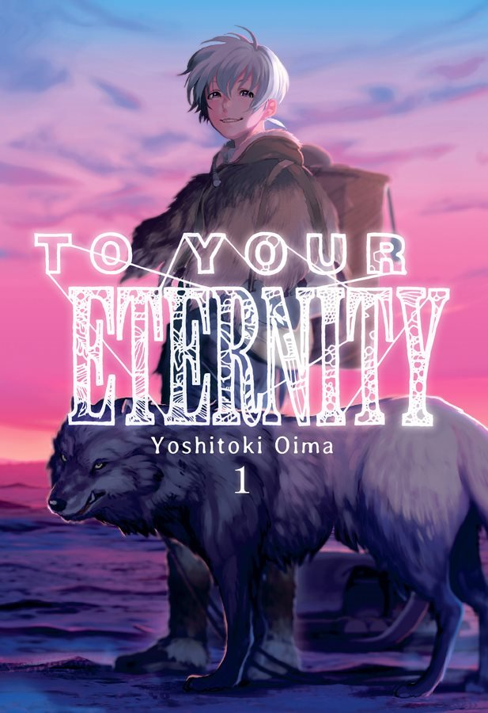
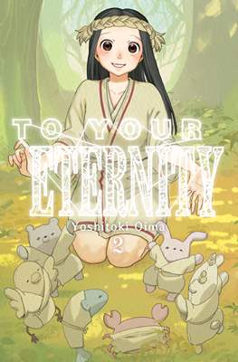
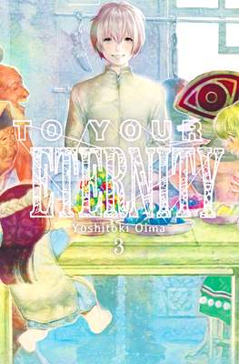
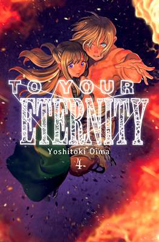
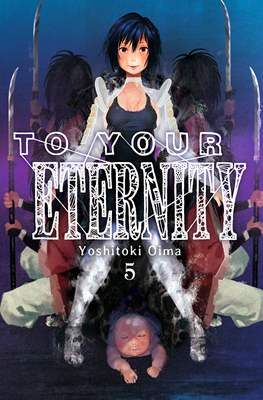

To Your Eternity
Título original: Fumetsu no Anata e (不滅のあなたへ) / To Your Eternity
Guion: Yoshitoki Oima
Dibujo: Yoshitoki Oima
Traducción: Jesús Espí
Editorial Japonesa: Kodansha
Editorial Argentina: Ivrea
Colección: Shonen
Formato: Tomo (115x170) rústica (tapa blanda) con sobrecubierta
Sentido de lectura: Oriental
Números en japonés: 18 (serie abierta)
Números en castellano: 7 (serie abierta)
Sinopsis
To Your Eternity es una serie anime que gira en torno a un ser inmortal que ha sido enviado a la Tierra, donde conoce a un lobo y a un niño que vive solo en medio de un paisaje todo nevado. Así comienza el viaje de este inmortal en un mundo lleno de experiencias y encuentros.Bajo el nombre ‘Aquello’, comienza a tomar la forma de aquellos que se encuentra a su alrededor siempre y cuando haga contacto por la menos una vez. Así comienza a ser una esfera, luego una roca, musgo, un lobo y más tarde un niño.




